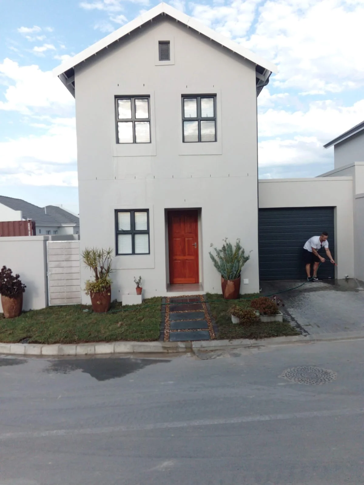
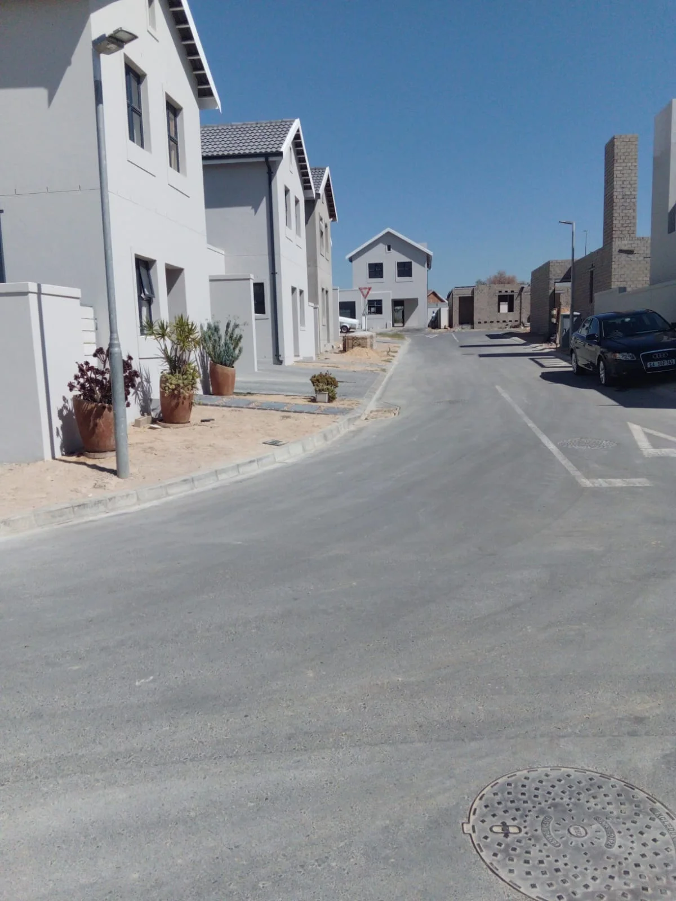

Projects
The work, documented.
Residential spaces, building works and civil projects. See the details through photographs and footage from site.
Selected work
From the ground up.
Explore the spaces, structures and site work that make up the L3 portfolio.


Completed spaces
Made for everyday life.
Residential exteriors, considered entrances and the finishing details that bring a home together.
Explore residential work ↗


Building works
Progress you can see.
Masonry, structural openings and roof framing, with the work on site brought into focus.
Explore building works ↗On site
The work in motion.
A closer perspective on the spaces and the activity behind the build.